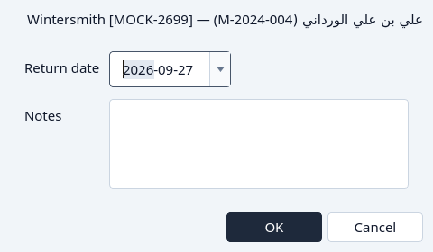
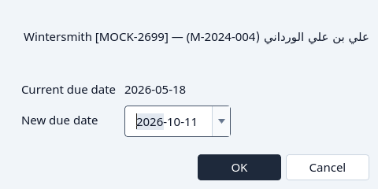
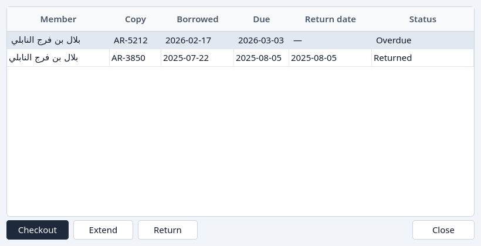

Return or extend
Bring a copy back, or give the loan more days.
Return and Extend are available only while the loan is still out. A returned loan no longer offers them. The status column already says why.
From Circulation
Highlight the loan. An open or overdue loan can be returned or extended.
Click Return.
The dialog shows the loan and asks for the day it came back. That day cannot be after today.

Return. OK marks the loan Returned and the copy available. Cancel leaves it out.
Click Extend.
The dialog suggests a due day after the current one. The new day has to be later than the due day the loan already has.

Extend.


From a loans dialog
The Loans button on a title or on a member lists that history. Highlight the loan that is still out. Extend and Return follow that row, and they are grey on a returned loan.


What if…
- The return day is after today. Choose today or an earlier day.
- The new due day is not after the current due day. Choose a later day.
- The loan is already Returned. Return and extend stay unavailable. Delete can archive it. See Remove.